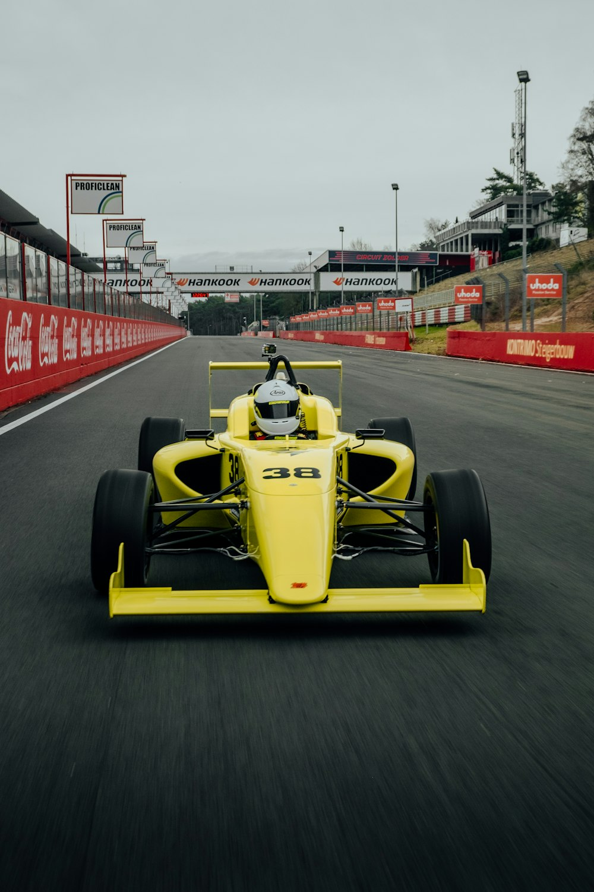
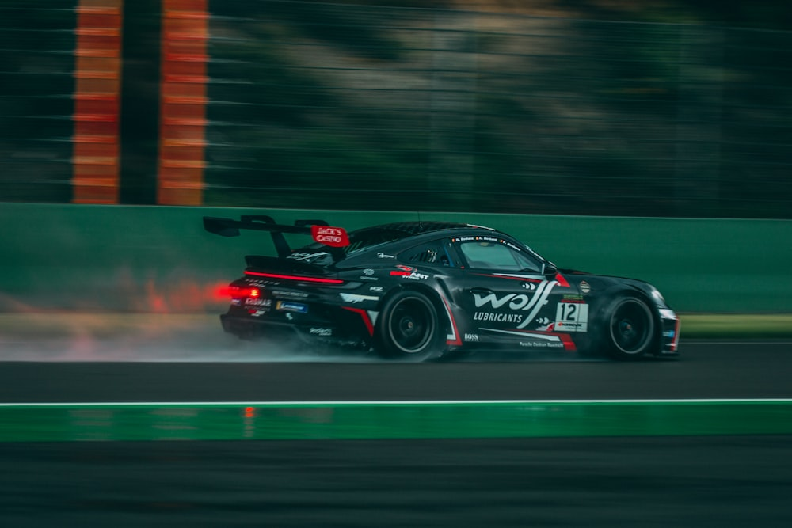
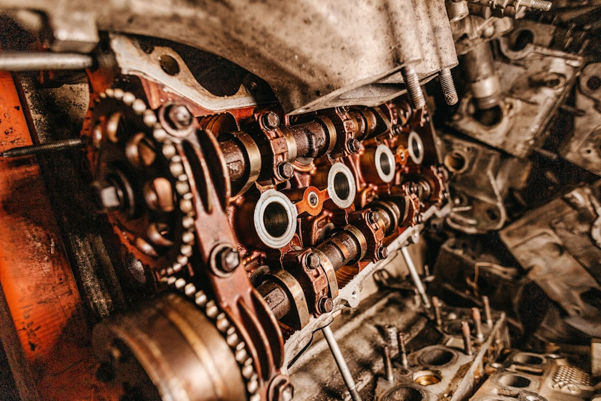

Från hobbyverkstad på 80-talet till en av få svenska firmor som klarar de allra flesta motorjobb i egen regi.
”Det är en stor fördel att kunna ha kontroll på alla delmoment själv när det gäller motorbyggen.” – Tomas Stenlund
Ultra Motors verksamhet sträcker sig tillbaka till mitten av 1980-talet då Tomas Stenlund startade upp en liten verkstad i lokaler utanför Södertälje. Från början var det mer eller mindre en hobbyverksamhet, men vartefter åren har gått har verksamheten och lokalerna växt och utvecklats till en toppmodern högteknologisk motorteknisk verkstad.
Tomas hade ett stort intresse för banracing, varför verksamheten drogs åt det hållet. I slutet av 80-talet rönte företaget stora framgångar i Lady Lancia Cup, där Tomas byggde både motorer och bilar åt flera av de kvinnliga förarna i toppskiktet.



Åren 1990–91 drev Tomas ett Formel 3-team med stor framgång på banorna runt om i Norden – idel topp tre-placeringar blev facit under de två säsongerna. I början på 90-talet byggde Tomas motorer åt ett flertal förare i Formel Ford 1600, vilket resulterade i segrar i både SM, NM och EM.
I slutet av 90-talet var det STCC som gällde – först ett eget team med en Alfa Romeo 155, för att senare driva Jan Brunstedts Opel Vectra-team. 2001 inleddes ett samarbete med Flash Engineering om att sköta Volvos motorer i STCC. Samarbetet resulterade i en totalseger 2002 i märkesmästerskapet, mycket tack vare motorernas snabbhet och tillförlitlighet.
Sommaren 2001 togs ett stort steg i Ultra Motors utveckling då ytterligare tre personer anställdes och en hel del nyinvesteringar i maskinparken gjordes. Två av de nyanställda kom från Forssbergs Maskinservice, en välkänd motorrenoveringsfirma i Södertälje med stor erfarenhet av tävlingsmotorer. I och med denna resursökning tog Ultra Motors steget upp till att bli en av få motorrenoveringsfirmor i Sverige som klarar att göra de allra flesta motorjobb ”in the house” utan externa underleverantörer.
Under ett stort projekt tillsammans med Ford Motorsport/Olsbergs MSE stod vi för utvecklingsarbetet och tillverkningen av motorerna. Vi har bland annat utvecklat och byggt ett 30-tal motorer för ”Ford Flexifuel Cup”, en rallyklass där alla kör Ford Fiesta på miljöbränslet E85. Utvecklingsarbetet resulterade även i motorer för rallycrossens värstingklass Div 1 i SM och EM – en Ford Fiesta-motor som i standardutförande ger 150 hk, men som efter hundratals timmars bearbetning lämnar närmare 600 hk.
Till 2009 tog vi fram en specialversion av motorn som användes vid den världsberömda tävlingen ”Pikes Peak” i USA – den versionen lämnar ytterligare några hundra hk mer. En av förarna var den flerfaldiga rallyvärldsmästaren Markus Grönholm.
Förutom att bygga motorer och motordelar till bilar, entreprenad- och industrimaskiner utför Ultra Motors även maskinbearbetning och prototyptillverkning åt företag som Saab Automobile, Alfa Laval och Volvo Aerospace. Inga uppdrag är för små eller för stora.
Maskinparken består av bland annat svarvar och fräsar – både manuella och datorstyrda NC-maskiner – planfräs, kamaxelslip, vevaxelslip och balanseringsmaskin för vevaxlar. Vidare finns cylinderborr, henings- och lineheningsmaskin, Centronic ventilsätesfräs och en avancerad mätmaskin, samt avancerade dataprogram för CAD/CAM/CAE. Dessutom har Ultra Motors en nybyggd testanläggning med avancerat mätsystem för provkörning av motorer, där även cylindertrycket kan mätas under körning.
Berätta om ditt projekt så återkommer vi.